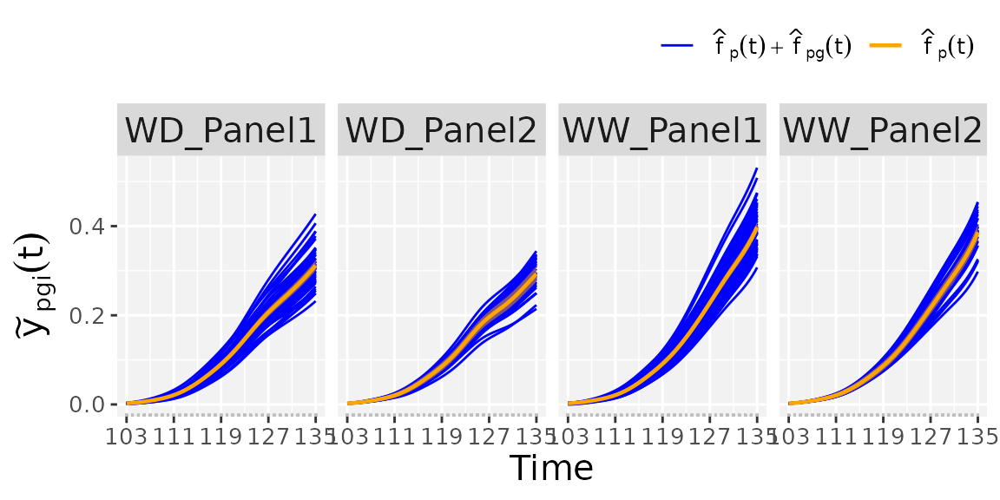
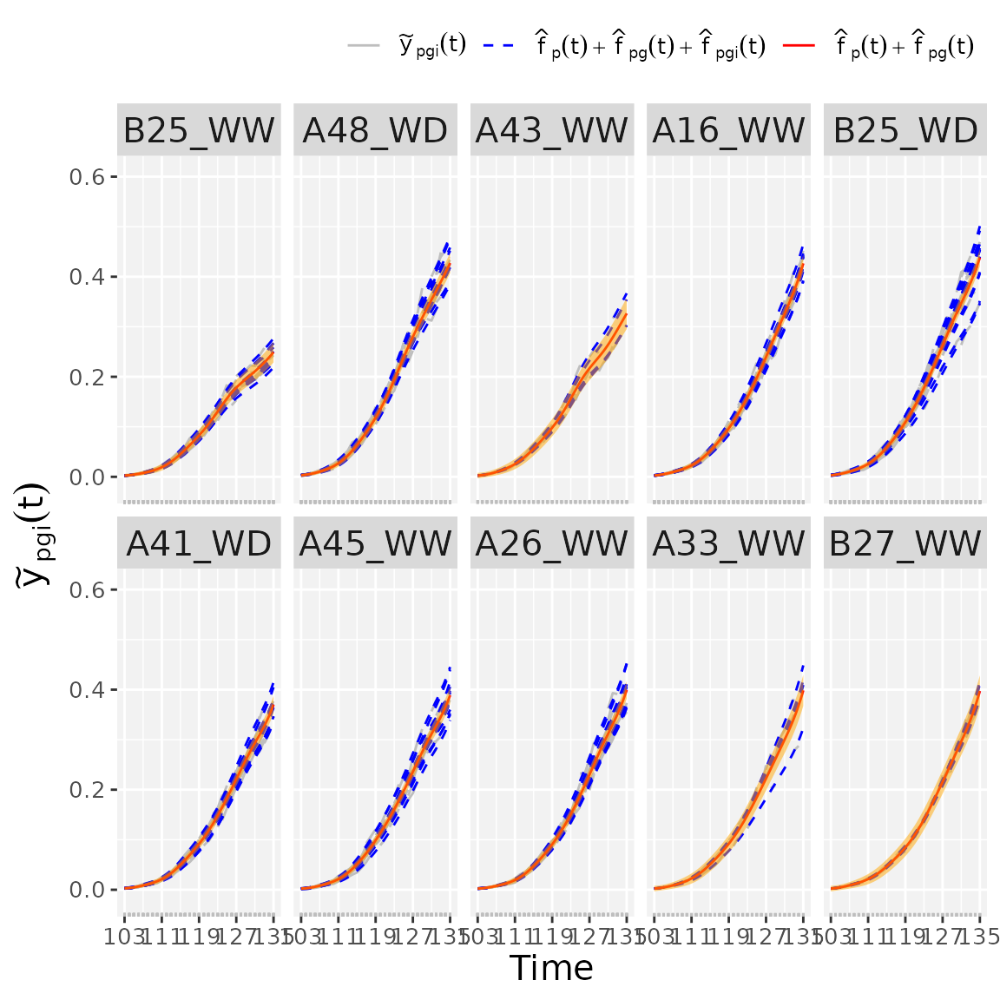

statgenHTP tutorial: 5. Modelling the temporal evolution of the genetic signal
Diana M. Pérez-Valencia, María Xosé Rodríguez-Álvarez, Bart-Jan van Rossum, Emilie Millet, Martin Boer, Fred van Eeuwijk
2025-07-02
Source:vignettes/vignettesSite/HierarchicalDataModel_HTP.Rmd
HierarchicalDataModel_HTP.RmdIntroduction
This document presents the second stage of the two-stage approach proposed by Pérez-Valencia et al. (2022). The aim is modeling the temporal evolution of the genetic signal after a spatial correction is performed on a phenotypic trait (see statgenHTP tutorial: 3. Correction for spatial trends).
Data consist of time-series (curves) of a (possibly) spatially corrected plant/plot phenotype. We assume that data present a hierarchical structure with plots nested in genotypes, and genotypes nested in “populations”. We denote as the spatially corrected phenotype for the th plant () of the th genotype in the th population () at time . As such, there is a total of plots/plants, genotypes, and populations. To model this sample of curves the following additive decomposition of the phenotypic variation over time is considered, and a P-spline-based three-level nested hierarchical data model (hereafter refer as psHDM) is used
where
- is the th population mean function.
- is the genotype-specific deviation from for the th genotype. Note that represents the genotype-specific trajectory for the th genotype.
- is the plot-specific deviation from for the th plot. In the same way than for the genotypes, is the plot-specific trajectory for the th plot.
- is the random noise curve, and is the weight obtained from, e.g., the spatial correction.
An illustration of these curves follows
Before proceeding, we note that the functions described in this tutorial can be applied to both spatially corrected data (see statgenHTP tutorial: 3. Correction for spatial trends) or raw data. These functions also allow estimating first- and second-order derivative curves from trajectory and deviation curves at the three levels of the hierarchy (populations, genotypes and plots/plants). All these curves can be used as input to extract time‐independent parameters to characterise genotypes (see statgenHTP tutorial: 6. Estimation of parameters from time courses).
To illustrate the analysis, we use the maize data corrected for
spatial trends, spatCorrectedArch. The data structure is as
follows
data(spatCorrectedArch)
str(spatCorrectedArch)
#> 'data.frame': 40573 obs. of 10 variables:
#> $ timeNumber : int 1 1 1 1 1 1 1 1 1 1 ...
#> $ timePoint : POSIXct, format: "2017-04-13" "2017-04-13" ...
#> $ LeafArea_corr: num 0.00256 0.0024 0.00321 0.00303 0.00269 ...
#> $ LeafArea : num 0.00287 0.00252 0.00338 0.00326 0.00249 ...
#> $ wt : num 2262 2262 2262 2262 2262 ...
#> $ genotype : Factor w/ 90 levels "GenoA01","GenoA02",..: 1 1 1 1 1 2 2 2 2 2 ...
#> $ geno.decomp : Factor w/ 4 levels "WD_Panel1","WD_Panel2",..: 1 1 1 1 1 1 1 1 1 1 ...
#> $ rowId : int 2 3 26 24 56 38 60 16 24 52 ...
#> $ colId : int 16 28 24 20 21 16 20 24 21 28 ...
#> $ plotId : Factor w/ 1673 levels "c10r1","c10r10",..: 368 1156 914 672 767 388 712 903 732 1181 ...For this specific example we first need to specify the
genotype-by-treatment interaction (genotype-by-water regime). As is
explained in Pérez-Valencia et al. (2022), the actual implementation of the
psHDM model does not allow for crossed effect, but only
for nested effects. As such, to analyse this dataset with the proposed
model, we combine the genotype and the water regime information as
follows (i.e.,
genoTreat =
genotype
treat)
str(spatCorrectedArch[["geno.decomp"]])
#> Factor w/ 4 levels "WD_Panel1","WD_Panel2",..: 1 1 1 1 1 1 1 1 1 1 ...
str(spatCorrectedArch[["genotype"]])
#> Factor w/ 90 levels "GenoA01","GenoA02",..: 1 1 1 1 1 2 2 2 2 2 ...
## Extracting the treatment: water regime (WW, WD).
spatCorrectedArch[["treat"]] <- as.factor(substr(spatCorrectedArch[["geno.decomp"]],
start = 1, stop = 2))
str(spatCorrectedArch[["treat"]])
#> Factor w/ 2 levels "WD","WW": 1 1 1 1 1 1 1 1 1 1 ...
## Specifying the genotype-by-treatment interaction.
spatCorrectedArch[["genoTreat"]] <-
interaction(spatCorrectedArch[["genotype"]],
spatCorrectedArch[["treat"]], sep = "_")
str(spatCorrectedArch[["genoTreat"]])
#> Factor w/ 180 levels "GenoA01_WD","GenoA02_WD",..: 1 1 1 1 1 2 2 2 2 2 ...We will use the spatially corrected leaf area
(LeafArea_corr) as response variable. We assume that plots
(plotId,
)
are nested in genotype-by-water regime (genoTreat,
),
and genotype-by-water regime are nested in populations/panel-by-water
regime (geno.decomp,
).
Furthermore, uncertainty is propagated from stage to stage using weights
(wt). Since we are in the context of longitudinal models,
it is natural that we use time as a covariate (i.e., the timepoints at
which the phenotype of interest was measured). We note that the
implemented function requires numerical times. If the
timeNumber column is used as it is returned by the
getCorrected() function, the user has to be aware that it
is a simple enumeration of the timepoints. Care must be taken when
dealing with non-equidistant timepoints to keep the same time scale as
in the original timePoint column. The user can also specify
any other numerical time transformation. For instance, in this example,
we first construct a new column called DOY with time in
days of the year
## Create a new timeNumber with days of the year (DOY)
spatCorrectedArch[["DOY"]] <- as.numeric(strftime(spatCorrectedArch$timePoint, format = "%j"))The following code depicts the kind of curves that are modelled here (at plant/plot level)
ggplot2::ggplot(data = spatCorrectedArch,
ggplot2::aes(x= DOY, y = LeafArea_corr, group = plotId)) +
ggplot2::geom_line(na.rm = TRUE) +
ggplot2::facet_grid(~geno.decomp) +
ggplot2::labs(y = "Spatially corrected leaf area")Fit the P-spline Hierarchical Curve Data Model (psHDM)
To fit the psHDM model, we use the
fitSplineHDM() function (results of the fitting process are
provided below)
## Fit P-Splines Hierarchical Curve Data Model for all genotypes.
fit.psHDM <- fitSplineHDM(inDat = spatCorrectedArch,
trait = "LeafArea_corr",
useTimeNumber = TRUE,
timeNumber = "DOY",
pop = "geno.decomp",
genotype = "genoTreat",
plotId = "plotId",
weights = "wt",
difVar = list(geno = FALSE, plot = FALSE),
smoothPop = list(nseg = 7, bdeg = 3, pord = 2),
smoothGeno = list(nseg = 7, bdeg = 3, pord = 2),
smoothPlot = list(nseg = 7, bdeg = 3, pord = 2),
trace = TRUE)In the example above, we use cubic
()
B-spline basis of dimension
and second order penalties
()
to represent
,
and
.
We note that the fitSplineHDM() function uses as argument
the number of segments nseg instead of the number of
B-spline basis
(nseg =
- bdeg, that is, for our example, if
then nseg = 7). We encourage the user to try different
values for nseg and compare the results. Under this model
configuration, the mixed model formulation of the psHDM
model has a total of 18570 regression coefficients (both fixed and
random
)
and
variance components. The fitting can also be performed for a subset of
genotypes or plots. The user only needs to specify the desired vector of
genotypes and/or plotIds.
Note: If the user prefers to use different penalty orders and/or B-spline degree values, the parameterisation proposed by Wood, Scheipl, and Faraway (2013) is the one used by the
fitSplineHDMfunction to obtain the design matrix for the fixed effects (i.e., ) in the mixed model formulation.
If useTimeNumber = FALSE, an internal numerical
transformation of the time points (timePoint) is made (and
returned) using the first time point as origin.
In this example we are using the weights obtained after a spatial
correction is performed in a previous stage (i.e.,
weights = wt, with wt a column in
spatCorrectedArch). However, if
weights = NULL, the weights are considered to be one. For
instance, this could be the case of modelling raw data.
With the difVar argument, the user can also specify if
the genetic variation varies across populations
(geno = TRUE) and the plant variation changes across
genotypes (plot = TRUE). Consequently, the number of
variance components, fit.psHDM$vc (and effective dimension,
fit.psHDM$ed) will increase with the number of populations
and/or genotypes, while the number of coefficients will remain the
same.
If trace = TRUE a report with changes in deviance and
effective dimension is printed by iteration. It is useful to understand
the importance of model components (Rodríguez-Álvarez et al. 2018), as
well as to detect convergence problems.
## Fit P-Splines Hierarchical Curve Data Model for all genotypes.
fit.psHDM <- fitSplineHDM(inDat = spatCorrectedArch,
trait = "LeafArea_corr",
useTimeNumber = TRUE,
timeNumber = "DOY",
pop = "geno.decomp",
genotype = "genoTreat",
plotId = "plotId",
weights = "wt",
difVar = list(geno = FALSE, plot = FALSE),
smoothPop = list(nseg = 7, bdeg = 3, pord = 2),
smoothGeno = list(nseg = 7, bdeg = 3, pord = 2),
smoothPlot = list(nseg = 7, bdeg = 3, pord = 2),
trace = TRUE)
#> Effective dimensions
#> -------------------------
#> It. Deviance p1 p2 p3 p4 g.int g.slp g.smooth i.int i.slp i.smooth
#> 1 -124003.216245 7.808 7.457 7.822 7.447 153.841 155.047 1086.529 1469.062 1513.633 8713.310
#> 2 -409208.877371 7.889 7.770 7.975 7.897 150.423 159.550 892.712 1236.532 1456.125 7041.664
#> 3 -412800.467660 7.910 7.787 7.983 7.925 157.527 162.575 803.841 1237.270 1465.159 5894.104
#> 4 -413841.057202 7.913 7.786 7.985 7.922 159.272 163.089 787.598 1286.468 1471.329 5195.497
#> 5 -414152.439567 7.914 7.783 7.985 7.918 159.443 163.042 790.487 1315.662 1474.828 4806.468
#> 6 -414237.155491 7.913 7.782 7.985 7.916 159.428 162.976 795.234 1328.862 1476.488 4604.336
#> 7 -414258.638613 7.913 7.780 7.985 7.914 159.431 162.949 798.454 1334.470 1477.223 4503.289
#> 8 -414263.887260 7.913 7.780 7.985 7.913 159.445 162.942 800.254 1336.873 1477.549 4453.660
#> 9 -414265.145823 7.913 7.779 7.985 7.913 159.458 162.941 801.189 1337.934 1477.696 4429.464
#> 10 -414265.444801 7.913 7.779 7.985 7.913 159.466 162.942 801.658 1338.419 1477.764 4417.702
#> 11 -414265.515495 7.913 7.779 7.985 7.913 159.470 162.942 801.890 1338.646 1477.796 4411.991
#> 12 -414265.532172 7.913 7.779 7.985 7.913 159.473 162.943 802.003 1338.754 1477.812 4409.220
#> 13 -414265.536102 7.913 7.779 7.985 7.913 159.474 162.943 802.058 1338.805 1477.819 4407.875
#> 14 -414265.537027 7.913 7.779 7.985 7.913 159.474 162.943 802.085 1338.830 1477.823 4407.222The resulting object, in this case fit.psHDM, contains
different information about the data structure, the fitting process, and
three data frames with the estimated curves at each of the three-levels
of the hierarchy (population, genotypes and plots). That is, it contains
the estimated trajectories and deviations, as well as their first and
second-order derivatives. For a detailed description of the returned
values see help(fitSplineHDM).
names(fit.psHDM)
#> [1] "y" "time" "popLevs" "genoLevs" "plotLevs"
#> [6] "nPlotPop" "nGenoPop" "nPlotGeno" "MM" "ed"
#> [11] "vc" "phi" "coeff" "deviance" "convergence"
#> [16] "dim" "family" "cholHn" "smooth" "popLevel"
#> [21] "genoLevel" "plotLevel"An example of the estimated curves structure follows.
popLevel contains, for each population (pop),
the estimated population trajectories
(,
fPop) as well as their first
(,
fPopDeriv1) and second-order
(,
fPopDeriv2) derivatives
names(fit.psHDM$popLevel)
#> [1] "timeNumber" "timePoint" "pop" "fPop" "fPopDeriv1"
#> [6] "fPopDeriv2"| timeNumber | timePoint | pop | fPop | fPopDeriv1 | fPopDeriv2 |
|---|---|---|---|---|---|
| 103 | 2017-04-13 | WD_Panel1 | 0.0025168 | 0.0006026 | 0.0004741 |
| 104 | 2017-04-14 | WD_Panel1 | 0.0033505 | 0.0010588 | 0.0004382 |
| 105 | 2017-04-15 | WD_Panel1 | 0.0046224 | 0.0014789 | 0.0004022 |
| 106 | 2017-04-16 | WD_Panel1 | 0.0062964 | 0.0018631 | 0.0003662 |
| 107 | 2017-04-17 | WD_Panel1 | 0.0083366 | 0.0022113 | 0.0003302 |
| 108 | 2017-04-18 | WD_Panel1 | 0.0107102 | 0.0025459 | 0.0003986 |
Further, genoLevel contains, for each genotype
(genotype) in a population (pop)
Estimated genotype deviations (,
fGeno) as well as their first (,fGenoDeriv1) and second-order (,fGenoDeriv2) derivatives.Estimated genotype trajectories (,
fGenoDev) as well as their first (,fGenoDevDeriv1) and second-order (,fGenoDevDeriv2) derivatives.
names(fit.psHDM$genoLevel)
#> [1] "timeNumber" "timePoint" "pop" "genotype"
#> [5] "fGeno" "fGenoDeriv1" "fGenoDeriv2" "fGenoDev"
#> [9] "fGenoDevDeriv1" "fGenoDevDeriv2"| timeNumber | timePoint | pop | genotype | fGeno | fGenoDeriv1 | fGenoDeriv2 | fGenoDev | fGenoDevDeriv1 | fGenoDevDeriv2 |
|---|---|---|---|---|---|---|---|---|---|
| 103 | 2017-04-13 | WD_Panel1 | GenoA01_WD | 0.0026216 | 0.0005841 | 0.0004948 | 0.0001048 | -0.0000185 | 2.06e-05 |
| 104 | 2017-04-14 | WD_Panel1 | GenoA01_WD | 0.0034437 | 0.0010507 | 0.0004385 | 0.0000932 | -0.0000080 | 3.00e-07 |
| 105 | 2017-04-15 | WD_Panel1 | GenoA01_WD | 0.0047043 | 0.0014611 | 0.0003822 | 0.0000819 | -0.0000179 | -2.00e-05 |
| 106 | 2017-04-16 | WD_Panel1 | GenoA01_WD | 0.0063471 | 0.0018152 | 0.0003259 | 0.0000507 | -0.0000480 | -4.03e-05 |
| 107 | 2017-04-17 | WD_Panel1 | GenoA01_WD | 0.0083158 | 0.0021129 | 0.0002696 | -0.0000208 | -0.0000984 | -6.06e-05 |
| 108 | 2017-04-18 | WD_Panel1 | GenoA01_WD | 0.0105575 | 0.0023776 | 0.0003217 | -0.0001527 | -0.0001682 | -7.68e-05 |
Finally, plotLevel contains, for each plot
(plotId) in a genotype (genotype) in a
population (pop)
Estimated plot deviations (,
fPlot) as well as their first (,fPlotDeriv1) and second-order (,fPlotDeriv2) derivatives.Estimated plot trajectories (,
fPlotDev) as well as their first (,fPlotDevDeriv1) and second-order (,fPlotDevDeriv2) derivatives.The original
traitvalues (,ObsPlot).
names(fit.psHDM$plotLevel)
#> [1] "timeNumber" "timePoint" "pop" "genotype"
#> [5] "plotId" "fPlot" "fPlotDeriv1" "fPlotDeriv2"
#> [9] "fPlotDev" "fPlotDevDeriv1" "fPlotDevDeriv2" "obsPlot"| timeNumber | timePoint | pop | genotype | plotId | fPlot | fPlotDeriv1 | fPlotDeriv2 | fPlotDev | fPlotDevDeriv1 | fPlotDevDeriv2 | obsPlot |
|---|---|---|---|---|---|---|---|---|---|---|---|
| 103 | 2017-04-13 | WD_Panel1 | GenoA01_WD | c12r20 | 0.0028737 | 0.0002559 | 0.0005414 | 0.0002521 | -0.0003282 | 4.66e-05 | NA |
| 104 | 2017-04-14 | WD_Panel1 | GenoA01_WD | c12r20 | 0.0033886 | 0.0007624 | 0.0004717 | -0.0000550 | -0.0002883 | 3.32e-05 | 0.0032766 |
| 105 | 2017-04-15 | WD_Panel1 | GenoA01_WD | c12r20 | 0.0043753 | 0.0011992 | 0.0004020 | -0.0003290 | -0.0002619 | 1.98e-05 | 0.0041821 |
| 106 | 2017-04-16 | WD_Panel1 | GenoA01_WD | c12r20 | 0.0057639 | 0.0015664 | 0.0003323 | -0.0005832 | -0.0002488 | 6.40e-06 | 0.0056382 |
| 107 | 2017-04-17 | WD_Panel1 | GenoA01_WD | c12r20 | 0.0074848 | 0.0018638 | 0.0002626 | -0.0008311 | -0.0002491 | -7.00e-06 | 0.0085059 |
| 108 | 2017-04-18 | WD_Panel1 | GenoA01_WD | c12r20 | 0.0094719 | 0.0021169 | 0.0003114 | -0.0010856 | -0.0002607 | -1.04e-05 | 0.0095675 |
Predict the P-spline Hierarchical Curve Data Model
The predict.psHDM() function can be used to obtain
predictions from a fitted psHDM model (obtained using
the fitSplineHDM() function; see above). In particular,
this function allows obtaining predictions (estimated curves at each
level of the hierarchy) on a dense grid of time points. Also, it allows
the calculation of standard errors. These standard errors can be used to
construct (approximate) pointwise confidence intervals for the estimated
curves.
## Predict the P-Splines Hierarchical Curve Data Model on a dense grid
## with standard errors at the population and genotype levels
pred.psHDM <- predict(object = fit.psHDM,
newtimes = seq(min(fit.psHDM$time[["timeNumber"]]),
max(fit.psHDM$time[["timeNumber"]]),
length.out = 100),
pred = list(pop = TRUE, geno = TRUE, plot = TRUE),
se = list(pop = TRUE, geno = TRUE, plot = FALSE),
trace = FALSE)Note 1: If
newtimesare not especified, the original time points are used.
Note 2: As a hierarchical model is assumed, predictions at inner levels (genotypes and plots) require predictions at outer levels (populations and genotypes). That is, if the user only wants predictions (argument
pred) at genotype level (geno = TRUE), then predictions at population level (pop = TRUE) should be calculated as well.
Note 3: Standard errors (argument
se) at the plot level demand large computing memory and time. For this example, if we use the original time points, estimation take approximately 20 minutes in a (64-bit) 4.2.1 and a 1.60GHz Dual-Core i5 processor computer with 16GB of RAM and macOS Monterrey Version 12.5. As such, if it is not strictly necessary, we suggest the user to set the standard errors at theplotlevel asFALSE. For comparison, ifplot = FALSEfor the standard errors argument, the computation time for the same example is 4 seconds approximately.
In the code above, we use the fit.psHDM object to make
predictions at the three levels of the hierarchy
(pred = list(pop = TRUE, geno = TRUE, plot = TRUE)), and to
obtain standard errors at the population and genotype levels
(se = list(pop = TRUE, geno = TRUE, plot = FALSE)). The
original data is measured at 33 time points, but predictions are
obtained at 100 time points in the same range than the original time
points (argument newtimes). As result, three data frames
with predictions (and standard errors) at population
(popLevel), genotype (GenoLevel) and plot
(plotLevel) levels are returned
names(pred.psHDM)
#> [1] "newtimes" "popLevel" "genoLevel" "plotLevel" "plotObs"
names(pred.psHDM$popLevel)
#> [1] "timeNumber" "timePoint" "pop" "fPop" "fPopDeriv1"
#> [6] "fPopDeriv2" "sePop" "sePopDeriv1" "sePopDeriv2"
names(pred.psHDM$GenoLevel)
#> NULL
names(pred.psHDM$plotLevel)
#> [1] "timeNumber" "timePoint" "pop" "genotype"
#> [5] "plotId" "fPlot" "fPlotDeriv1" "fPlotDeriv2"
#> [9] "fPlotDev" "fPlotDevDeriv1" "fPlotDevDeriv2"Note 4: If the original time points are used for predictions, the data frame at plot level (
plotLevel) will have an additional column (obsPlot) with the raw data. Otherwise, an additional data frame (plotObs) with the raw data will be returned.
| timeNumber | timePoint | pop | fPop | fPopDeriv1 | fPopDeriv2 | sePop | sePopDeriv1 | sePopDeriv2 |
|---|---|---|---|---|---|---|---|---|
| 103.0000 | 2017-04-13 00:00:00 | WD_Panel1 | 0.0025168 | 0.0006026 | 0.0004741 | 0.0010397 | 0.0002835 | 5.17e-05 |
| 103.3232 | 2017-04-13 07:45:27 | WD_Panel1 | 0.0027362 | 0.0007540 | 0.0004625 | 0.0010198 | 0.0002789 | 4.74e-05 |
| 103.6465 | 2017-04-13 15:30:54 | WD_Panel1 | 0.0030038 | 0.0009016 | 0.0004509 | 0.0010074 | 0.0002752 | 4.32e-05 |
| 103.9697 | 2017-04-13 23:16:21 | WD_Panel1 | 0.0033186 | 0.0010455 | 0.0004392 | 0.0010025 | 0.0002720 | 3.93e-05 |
| 104.2929 | 2017-04-14 07:01:49 | WD_Panel1 | 0.0036793 | 0.0011856 | 0.0004276 | 0.0010048 | 0.0002692 | 3.56e-05 |
| 104.6162 | 2017-04-14 14:47:16 | WD_Panel1 | 0.0040847 | 0.0013219 | 0.0004160 | 0.0010143 | 0.0002667 | 3.23e-05 |
| timeNumber | timePoint | pop | genotype | fGeno | fGenoDeriv1 | fGenoDeriv2 | fGenoDev | fGenoDevDeriv1 | fGenoDevDeriv2 | seGeno | seGenoDeriv1 | seGenoDeriv2 | seGenoDev | seGenoDevDeriv1 | seGenoDevDeriv2 |
|---|---|---|---|---|---|---|---|---|---|---|---|---|---|---|---|
| 103.0000 | 2017-04-13 00:00:00 | WD_Panel1 | GenoA01_WD | 0.0026216 | 0.0005841 | 0.0004948 | 0.0001048 | -1.85e-05 | 2.06e-05 | 0.0018419 | 0.0005717 | 0.0001888 | 0.0020863 | 0.0006259 | 0.0001870 |
| 103.3232 | 2017-04-13 07:45:27 | WD_Panel1 | GenoA01_WD | 0.0028359 | 0.0007411 | 0.0004766 | 0.0000997 | -1.29e-05 | 1.41e-05 | 0.0017929 | 0.0005450 | 0.0001722 | 0.0020349 | 0.0006016 | 0.0001706 |
| 103.6465 | 2017-04-13 15:30:54 | WD_Panel1 | GenoA01_WD | 0.0031000 | 0.0008922 | 0.0004584 | 0.0000962 | -9.40e-06 | 7.50e-06 | 0.0017605 | 0.0005243 | 0.0001557 | 0.0020013 | 0.0005827 | 0.0001545 |
| 103.9697 | 2017-04-13 23:16:21 | WD_Panel1 | GenoA01_WD | 0.0034120 | 0.0010374 | 0.0004402 | 0.0000934 | -8.10e-06 | 1.00e-06 | 0.0017436 | 0.0005088 | 0.0001396 | 0.0019845 | 0.0005684 | 0.0001388 |
| 104.2929 | 2017-04-14 07:01:49 | WD_Panel1 | GenoA01_WD | 0.0037700 | 0.0011768 | 0.0004220 | 0.0000907 | -8.80e-06 | -5.60e-06 | 0.0017415 | 0.0004974 | 0.0001239 | 0.0019839 | 0.0005576 | 0.0001235 |
| 104.6162 | 2017-04-14 14:47:16 | WD_Panel1 | GenoA01_WD | 0.0041721 | 0.0013102 | 0.0004038 | 0.0000875 | -1.17e-05 | -1.22e-05 | 0.0017531 | 0.0004891 | 0.0001088 | 0.0019985 | 0.0005494 | 0.0001090 |
| timeNumber | timePoint | pop | genotype | plotId | fPlot | fPlotDeriv1 | fPlotDeriv2 | fPlotDev | fPlotDevDeriv1 | fPlotDevDeriv2 |
|---|---|---|---|---|---|---|---|---|---|---|
| 103.0000 | 2017-04-13 00:00:00 | WD_Panel1 | GenoA01_WD | c12r20 | 0.0028737 | 0.0002559 | 0.0005414 | 0.0002521 | -0.0003282 | 4.66e-05 |
| 103.3232 | 2017-04-13 07:45:27 | WD_Panel1 | GenoA01_WD | c12r20 | 0.0029843 | 0.0004272 | 0.0005188 | 0.0001484 | -0.0003138 | 4.22e-05 |
| 103.6465 | 2017-04-13 15:30:54 | WD_Panel1 | GenoA01_WD | c12r20 | 0.0031491 | 0.0005913 | 0.0004963 | 0.0000491 | -0.0003009 | 3.79e-05 |
| 103.9697 | 2017-04-13 23:16:21 | WD_Panel1 | GenoA01_WD | c12r20 | 0.0033658 | 0.0007481 | 0.0004738 | -0.0000463 | -0.0002893 | 3.36e-05 |
| 104.2929 | 2017-04-14 07:01:49 | WD_Panel1 | GenoA01_WD | c12r20 | 0.0036319 | 0.0008976 | 0.0004513 | -0.0001381 | -0.0002792 | 2.92e-05 |
| 104.6162 | 2017-04-14 14:47:16 | WD_Panel1 | GenoA01_WD | c12r20 | 0.0039452 | 0.0010398 | 0.0004287 | -0.0002269 | -0.0002704 | 2.49e-05 |
Plot the P-spline Hierarchical Curve Data Model
The plot.psHDM() function plots psHDM
objects. We note that objects of class psHDM can be
obtained using both fitSplineHDM() and
predict.psHDM() functions. In both cases, the resulting
object contains information about estimated trajectories, deviations and
first-order derivatives at the three levels of the hierarchy. As such,
plots of these curves can be obtained. In addition, when plots are
obtained from an object obtained using the predict.psHDM()
function,
pointwise confidence intervals are also depicted.
To illustrate the usage of function plot.psHDM(), we use
here the object pred.psHDM obtained in the prediction
section.
Plots at population level
If plotType = "popTra", estimated population-specific
trajectories are depicted
()
separately for each population, and their
pointwise confidence intervals. Additionally, the grey lines represent
the observed trait that is used in the
fitSplineHDM function (i.e.,
).
## Population-specific trajectories.
plot(pred.psHDM, plotType = "popTra", themeSizeHDM = 10)Plots at genotype level
At genotype level we can visualise three plots:
- If
plotType = "popGenoTra", estimated population () and genotype-specific () trajectories are depicted for all genotypes separately for each population. pointwise confidence intervals are depicted for the estimated population trajectories.
## Population and genotype-specific trajectories.
plot(pred.psHDM, plotType = "popGenoTra", themeSizeHDM = 10)
- If
plotType = "popGenoDeriv", first-order derivative of the estimated population () and genotype-specific () trajectories are depicted for all genotypes separately for each population. pointwise confidence intervals are depicted for estimated trajectories at the population level.
## First-order derivative of the population- and genotype-specific trajectories.
plot(pred.psHDM, plotType = "popGenoDeriv", themeSizeHDM = 10)- Finally, if
plotType = "GenoDev", estimated genotype-specific deviations () are depicted for all genotypes separately for each population.
## Genotype-specific deviations.
plot(pred.psHDM, plotType = "genoDev", themeSizeHDM = 10)Plots at plot level
Finally, if we are interested in obtaining plots at the plot level,
we use plotType = "genoPlotTra". Here, estimated genotype
()
and plot-specific
()
trajectories are depicted for all plots separately for a selection of
genotypes. Also,
pointwise confidence intervals are depicted for the estimated
genotype-specific trajectories. For this plotType, the user
has the option to change names (genotypeNames) and/or order
(genotypeOrder) of the selected genotypes.
## As an example we used ten randomly selected genotypes
set.seed(1)
plot.genos <- sample(pred.psHDM$genoLevel$genotype,10, replace = FALSE)
names.genos <- substring(plot.genos, first = 5)
names.genos
#> [1] "B25_WW" "A48_WD" "A43_WW" "A16_WW" "B25_WD" "A41_WD" "A45_WW" "A26_WW"
#> [9] "A33_WW" "B27_WW"
## Genotype- and plot-specific trajectories.
plot(pred.psHDM,
plotType = "genoPlotTra",
genotypes = plot.genos, genotypeNames = names.genos,
themeSizeHDM = 10)